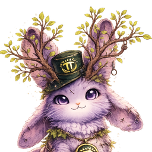
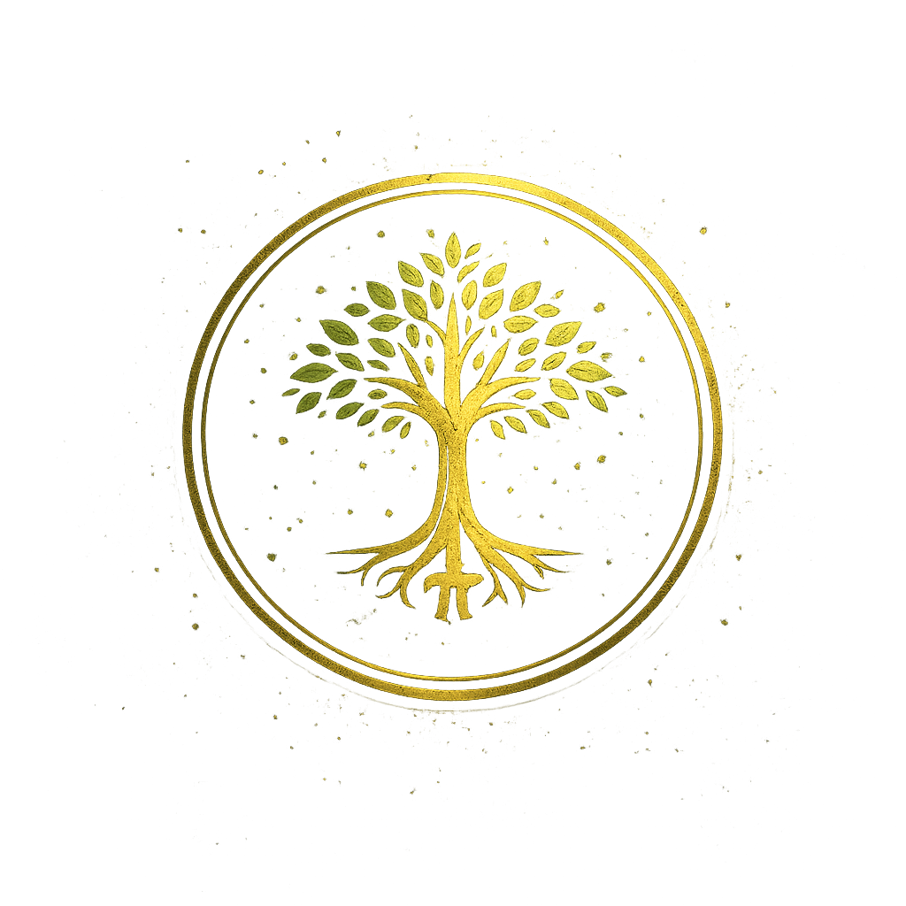

THE PIONEER FOREST
Forest Hub
A clearing.
This clearing reveals how the forest is shaped —
living campaigns, shared artifacts, and the record behind them.
Art shapes it.
Trust sustains it.
The Ongoing Forest
Impact, totals, and the living numbers.

Elowen
Soon
Character branch. Editions & shared artifacts.

Guardians of Growth
The root campaign that began the forest.
The Witness
Transparency & scope. What this is — and isn’t.
Return Home
The Pioneer Forest